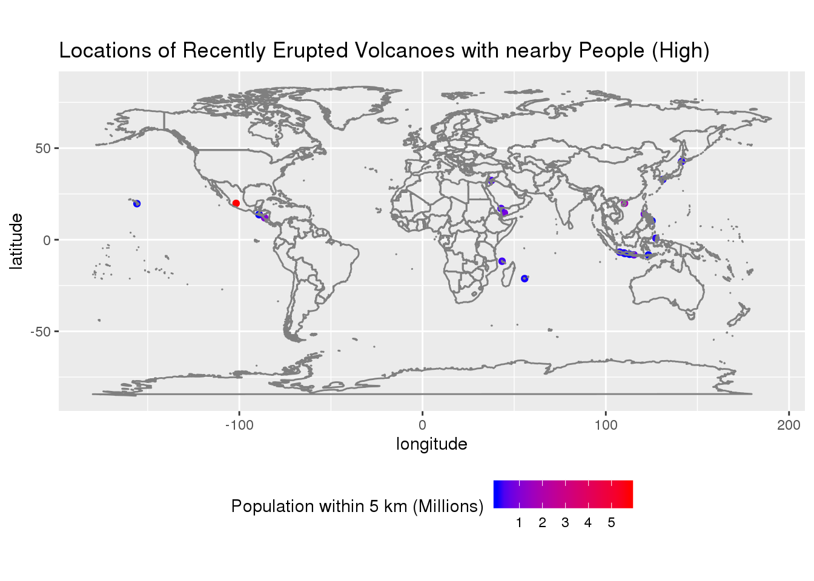

Using the volcano data from tinytuesday I will investigate volcanic eruptions and the affect they have on the environment. I will use the volcano, eruptions and sulfur datasets in order to explore this. The volcano dataset contains the variables volcano_number and volcano_name, which can be used to identify the volcanoes, population_within_5_km, which is the number of people within 5 kilometers of the volcano, latitude and longitude, doubles which can show where the volcanoes are and primary_volcano_type, a factor with 26 levels which shows what types the volcanoes are. The sulfur dataset contains the variables neem, which is the sulfur detected in ng/g from melting ice cores in Greenland, wdc, which is the sulfur detected in ng/g from melting ice cores in Antarctica, and Year, which is the year in CE that the ice cores were formed. The eruptions dataset volcano_number and volcano_name, which can be used to identify the volcanoes, eruption_number, which is a volcano eruption’s unique ID, start_year, start_month and start_day, which show the starting date of the eruption and eruption_category, a factor with three levels that shows whether the eruption was confirmed, uncertain or discredited.
dat1 <- read.csv(here::here("content", "post", "2020-12-10-a-first-post", "data",
"volcano.csv"))
dat2 <- read.csv(here::here("content", "post", "2020-12-10-a-first-post", "data",
"eruptions.csv"))
dat3 <- read.csv(here::here("content", "post", "2020-12-10-a-first-post", "data",
"events.csv"))
dat4 <- read.csv(here::here("content", "post", "2020-12-10-a-first-post", "data",
"sulfur.csv"))
Question 1:
To what extent does a volcano eruption impact the atmosphere? To explore this I will attempt to determine the relation between major volcanic eruptions (defined here as any eruption with a vei of 4 or higher) and spikes in sulfur levels in both Greenland and Antarctica. I will do this by creating a line graph with sulfur concentrations and plotting the major volcanic eruptions as dots on the date they occurred.
filtered <- dat1 %>%
left_join(dat2, by = c("volcano_number", "volcano_name", "longitude", "latitude")) %>%
filter(eruption_category == "Confirmed Eruption", vei >= 4, start_year >= 500, start_year <=
706)
ggplot() +
geom_line(data = dat4, aes(year, neem, color = "blue")) +
geom_line(data = dat4, aes(year, wdc, color = "red")) +
geom_point(data = filtered, aes(start_year, 0)) +
scale_color_manual(name = "Location of Ice Cores", labels = c("Greenland", "Antarctica"),
values = c(blue = "blue", red = "red")) +
ylab("Sulfur (ng/g)") +
xlab("Year") +
ggtitle("Year vs Sulfur")
## Warning: Removed 290 rows containing missing values (geom_path).
## Warning: Removed 290 rows containing missing values (geom_path).
 Most major volcanic eruptions seem to coincide with a large spike in sulfur concentration in either Greenland or Antarctica. However, not all major volcanic eruptions seem to cause a spike in sulfur levels, which could possibly be because these volcanoes are too far away and lack the power to affect Greenland and Antarctica. This suggests the impact most volcanic eruptions can have on the atmosphere is limited and significantly decreases as distance increases. However, within their range, volcanoes seem to have a large, although temporary affect on the atmosphere.
Most major volcanic eruptions seem to coincide with a large spike in sulfur concentration in either Greenland or Antarctica. However, not all major volcanic eruptions seem to cause a spike in sulfur levels, which could possibly be because these volcanoes are too far away and lack the power to affect Greenland and Antarctica. This suggests the impact most volcanic eruptions can have on the atmosphere is limited and significantly decreases as distance increases. However, within their range, volcanoes seem to have a large, although temporary affect on the atmosphere.
Question 2:
Are there any areas where a large amount of people live that are currently at risk from volcano eruptions and how many people are living near it? To determine this, I will create a map of the various volcanoes around the world with populations of at least 1000 people within 5 kilometers of it and color them based on the total population within 5 kilometers.
dat1 %>%
left_join(dat2, by = c("volcano_number", "volcano_name", "longitude", "latitude")) %>%
group_by(volcano_name, volcano_number) %>%
filter(eruption_category == "Confirmed Eruption", start_year >= 1800, start_year ==
max(start_year), population_within_5_km >= 25000) %>%
select(region, longitude, latitude, population_within_5_km) %>%
ggplot(aes(longitude, latitude, color = population_within_5_km/1e+06)) +
geom_point() +
borders("world") +
coord_quickmap() +
ggtitle("Locations of Recently Erupted Volcanoes with nearby People (High)") +
theme(legend.position = "bottom") +
scale_color_gradient(name = "Population within 5 km (Millions)", low = "blue", high = "red")

dat1 %>%
left_join(dat2, by = c("volcano_number", "volcano_name", "longitude", "latitude")) %>%
group_by(volcano_name, volcano_number) %>%
filter(eruption_category == "Confirmed Eruption", start_year >= 1800, start_year ==
max(start_year), population_within_5_km >= 1000, population_within_5_km <= 25000) %>%
select(region, longitude, latitude, population_within_5_km) %>%
ggplot(aes(longitude, latitude, color = population_within_5_km/1000)) +
geom_point() +
borders("world") +
coord_quickmap() +
ggtitle("Locations of Recently Erupted Volcanoes with nearby People (Low)") +
theme(legend.position = "bottom") +
scale_color_gradient(name = "Population within 5 km (thousands)", low = "blue", high = "red")
Most of the volcanoes seem to be located on the coasts of continents. For one of these volcanoes in Mexico, Michoacan-Guanajuato, there are about 5 million people living within 5 kilometers of it which could be hazardous for the people living there if it erupts again. Besides Mexico, other places where people live close to volcanoes are Indonesia and Japan, but most have below 3 million people.
Question 3:
What volcanoes have erupted the most often, and is there a difference in the number of eruptions between volcano type? To determine this, I will compare the number of eruptions in both volcano type and volcano names.
dat1 %>%
left_join(dat2, by = c("volcano_number", "volcano_name", "longitude", "latitude")) %>%
group_by(volcano_number, volcano_name, primary_volcano_type) %>%
filter(eruption_category == "Confirmed Eruption") %>%
summarize(total = n()) %>%
ungroup() %>%
slice_max(total, n = 10) %>%
ggplot(aes(volcano_name, total, fill = primary_volcano_type)) +
geom_bar(stat = "identity") +
theme(axis.text.x = element_text(angle = -60, hjust = 0, vjust = 0.5)) +
ylab("Number of Eruptions") +
xlab("Volcano Name") +
ggtitle("Number of Eruptions by volcano")
dat1 %>%
left_join(dat2, by = c("volcano_number", "volcano_name", "longitude", "latitude")) %>%
group_by(primary_volcano_type) %>%
filter(eruption_category == "Confirmed Eruption") %>%
summarize(total = n()) %>%
ungroup() %>%
arrange(desc(total)) %>%
ggplot(aes(primary_volcano_type, total)) +
geom_bar(stat = "identity") +
theme(axis.text.x = element_text(angle = -90, hjust = 0, vjust = 0.5)) +
ylab("Number of Eruptions") +
xlab("Volcano Type") +
ggtitle("Number of Eruptions by volcano type")
Out of the various volcano types, the stratovolcano has the largest number of eruptions, being about four times as eruptive as a shield volcano. In addition among the volcanoes around the world, Mount Etna, a stratovolcano, is the most eruptive volcano. Although other types of volcanoes also rank as the ten most eruptive volcanoes, stratovolcanoes make up the half of the most eruptive volcanoes. It seems that although several highly eruptive volcanoes of other types exist, a stratovolcano is on average the most eruptive type of volcano.
Conclusion:
Although highly eruptive volcanoes of other types exist, the stratovolcano is on average the most risky volcano type to be around. Even when not just a few kilometers away, a volcano’s eruptions can even temporarily impact the atmosphere. Consequently, living near an active volcano can potentially be very hazardous, especially those which typically erupt at a 4 or higher VEI. In conclusion, volcanoes can have a large environmental impact on the areas around it.